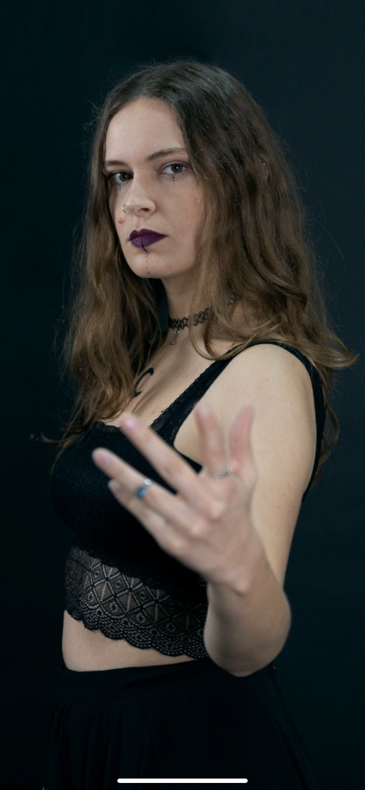

Recorrido
Nocturna es una banda sevillana de metal sinfónico que fusiona la fuerza del metal con la majestuosidad de la música clásica, creando una atmósfera única
y envolvente que transporta al oyente a un mundo lleno de emoción y poder. Con influencias destacadas de bandas icónicas como Nightwish, Within Temptation
y otros referentes del género, Nocturna se distingue por su capacidad para conjugar melodías épicas, letras profundas y un estilo que no teme mezclar lo más
técnico con lo emocional. Formada en 2013, la banda ha evolucionado con cada miembro, aportando su talento y pasión, lo que ha permitido que su sonido se
distinga en el panorama del metal sinfónico.
Componentes
Isa González Arques - Vocalista
Isa González Arques, nacida el 2 de mayo de 1994, es la vocalista principal de Nocturna. Se unió al grupo a finales de 2013, destacándose desde
entonces por su versatilidad vocal y su apasionada dedicación a la música. Con una formación sólida en canto lírico, ha estado recibiendo clases
desde 2017, lo que le ha permitido perfeccionar su técnica y conseguir un timbre único que combina la delicadeza del canto clásico con la intensidad
de estilos más modernos. Además de su dominio del canto lírico, Isa ha desarrollado una impresionante capacidad para cantar en estilo gutural, lo que
le otorga un rango vocal extraordinariamente amplio y una presencia impresionante en el escenario. Su personalidad es cálida y cercana, transmitiendo
una sensación de familiaridad y dulzura a quienes la conocen, tanto en el escenario como fuera de él. Isa es una persona apasionada por la música
especialmente por géneros tan contrastantes como el death metal, y le encanta combinar su amor por lo adorable con la potencia emocional de su música.
Su risa, angelical y espontánea, es tan memorable como su habilidad para ejecutar potentes guturales, creando una mezcla perfecta de suavidad y fuerza
que se refleja en cada interpretación.

Marian Hervás Lobo, nacida el 5 de marzo de 1993, es la vocalista y una de las principales figuras de Nocturna. Con una energía inconfundible, se unió
al grupo en sus primeras etapas y ha sido una pieza clave en la creación del sonido único de la banda. Además de su dedicación a la música, Marian cursa
la carrera de Ingeniería en Telecomunicaciones, lo que refleja su gran capacidad para equilibrar su vida académica y su pasión por el arte. En el escenario,
Marian destaca por su presencia arrolladora y su estilo vocal característico. Su voz, intensa y desgarrada, captura la atención de la audiencia desde el
primer acorde, llevando a cabo una poderosa interpretación de cada canción. Su estilo rockero y su capacidad para transmitir emociones profundas mediante
su canto la convierten en una artista con un enfoque visceral y auténtico. Además de su impresionante técnica vocal, Marian tiene un talento excepcional
para actuar, lo que la convierte en una gran intérprete. Sabe cómo representar escenas y transmitir la emoción de cada tema, llevando al público a vivir
la historia que está cantando. Su personalidad extrovertida y su carácter espontáneo se reflejan en cada actuación, donde no solo canta, sino que crea una
conexión única con quienes la observan. Aunque su estilo pueda parecer audaz y rebelde, en el fondo, Marian es una persona encantadora y genuina, siempre
dispuesta a ofrecer su mejor versión sobre el escenario.
Marian Hervás Lobo - Vocalista
Fran Benítez González - Teclista
Fran Benítez González, nacido el 9 de julio de 1995, es el teclista y compositor principal de Nocturna. Desde temprana edad, mostró un profundo interés por
la música, iniciándose en sus estudios musicales a los seis años. Aunque en su juventud intentó formarse como flautista, su verdadera pasión lo llevó al
teclado, instrumento en el que encontró una manera única de expresar sus emociones y creatividad. Influenciado por una amplia variedad de géneros, Paco
encuentra inspiración en las grandes bandas de metal como Nightwish, Powerwolf y Amon Amarth, pero también se siente profundamente conectado con las raíces
musicales andaluzas. Bandas como Triana y otros grupos de la región han sido una influencia clave en su estilo compositivo, lo que le permite fusionar el
metal sinfónico con elementos del rock progresivo y la música tradicional andaluza. Esta fusión de estilos, cargada de riqueza y complejidad, es un sello
distintivo de su obra en Nocturna. Además de ser un talentoso músico, Paco es conocido por incorporar una fuerte crítica social en sus composiciones. Sus
letras abordan temas relevantes, reflejando inquietudes sociales y cuestionando injusticias, lo que aporta una capa profunda de reflexión y consciencia en
su música. Su capacidad para combinar lo emocional con lo racional lo convierte en un compositor versátil, capaz de trascender géneros y de ofrecer un
mensaje poderoso en cada uno de sus temas.
Lore Sabido Bozo nació el 16 de noviembre de 1996 y, aunque es la más joven del grupo, ha demostrado ser una de las personalidades más sólidas y decididas de
Nocturna. Con su carácter serio y profesional, Lore es conocida por ser la mente fría del grupo, siempre capaz de tomar las decisiones más acertadas en momentos
cruciales. Su capacidad para mantener la calma y la claridad en situaciones difíciles ha sido una gran fortaleza para el equipo, especialmente cuando se trata
de enfrentar desafíos tanto en el escenario como fuera de él. A pesar de ser la más joven del grupo, Lore ha tenido que afrontar numerosos desafíos
en su camino, especialmente como mujer en un mundo tradicionalmente dominado por hombres. Ha demostrado una enorme fortaleza y entereza, enfrentando estas
dificultades con valentía y superando cualquier obstáculo que se le haya presentado. Junto con Fran, Lore fundó Nocturna, aportando su talento y visión musical
única al proyecto. Aunque su pasión por el metal es innegable, tiene una relación muy especial con la guitarra, un instrumento que aprendió a tocar con un
guitarrista flamenco. Este toque personal y su capacidad para integrar diversos estilos en su música le otorgan un enfoque único dentro del grupo,
fusionando lo mejor del metal con elementos de la tradición musical andaluza. Su profesionalismo y su dedicación a la música la convierten en una de las
figuras más admiradas dentro de la banda.
Lore Sabido Bozo - Guitarrista
Rafa Salés Serrano - Bajista
Rafa Salés Serrano nació el 11 de julio de 1990, siendo el miembro de mayor edad en la banda Nocturna. Aunque inicialmente comenzó su carrera musical como baterista,
un giro inesperado en su camino lo llevó a convertirse en el bajista de la banda. Su transición de la batería al bajo fue algo fortuito, pero encontró en este
instrumento una nueva pasión y propósito, desarrollando un estilo único que enriquece las composiciones del grupo. Rafa destaca por su agudo oído musical, habilidad
que le permite improvisar con facilidad y aportar detalles sonoros especiales a las canciones de Nocturna. A pesar de ser autodidacta en el bajo, su enfoque técnico
y su versatilidad han sido fundamentales para el sonido distintivo de la banda. Con una gran capacidad para adaptarse a diferentes estilos musicales, ha logrado
conectar con la esencia del grupo, fusionando su pasado como percusionista con su amor por el bajo.

Kevin Salés Serrano nació el 11 de noviembre de 1994 y es conocido por su precisión y fiabilidad en la batería, características que le han valido la admiración de
todos los que lo escuchan. Desde muy joven, Kevin aprendió a tocar la batería con la ayuda de su hermano Rafa, quien lo introdujo en el mundo de la música y le
enseñó las bases de este instrumento. A lo largo de los años, Kevin ha perfeccionado su técnica, convirtiéndose en un músico excepcional, cuya destreza es inigualable,
y cuya ejecución es tan precisa que sus compañeros lo describen como un 'reloj'. Aunque su personalidad puede ser reservada y algo 'sosa', como él mismo se describe,
Kevin tiene una presencia única en la banda. Su capacidad para ejecutar complejas secuencias rítmicas, especialmente sus características variaciones de tresillos en
el bombo, le dan un toque distintivo al sonido de Nocturna. Antes de unirse oficialmente al grupo, Kevin ya era amigo cercano de Isa, Paco y Lore, lo que hizo que su
integración en Nocturna fuera aún más natural. Su habilidad para mantenerse en calma y centrado durante los momentos más exigentes del escenario, sumado a su sentido
del compañerismo, lo han convertido en un pilar fundamental dentro de la banda
Kevin Salés Serrano - Batería